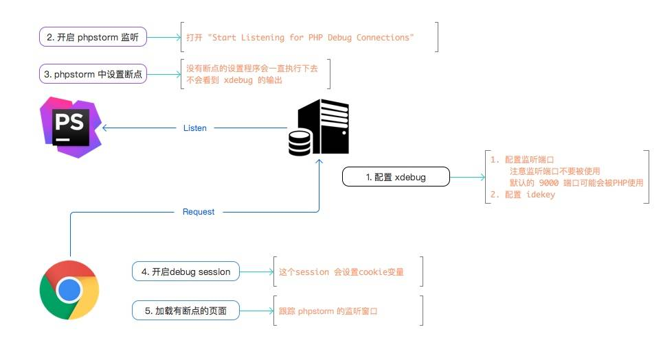
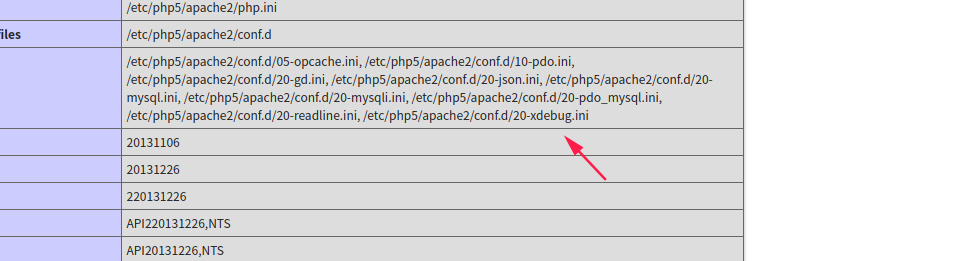
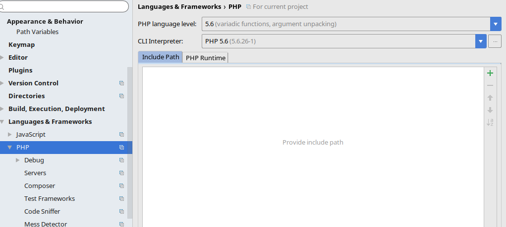
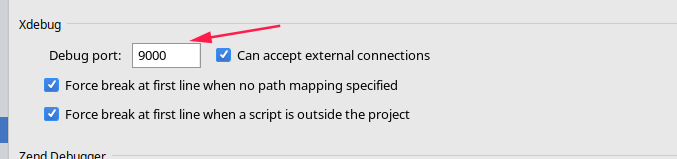
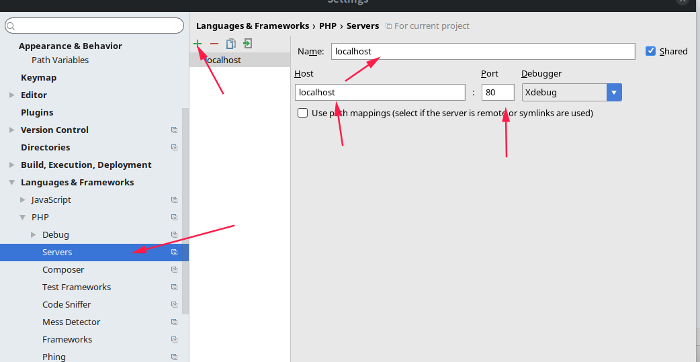
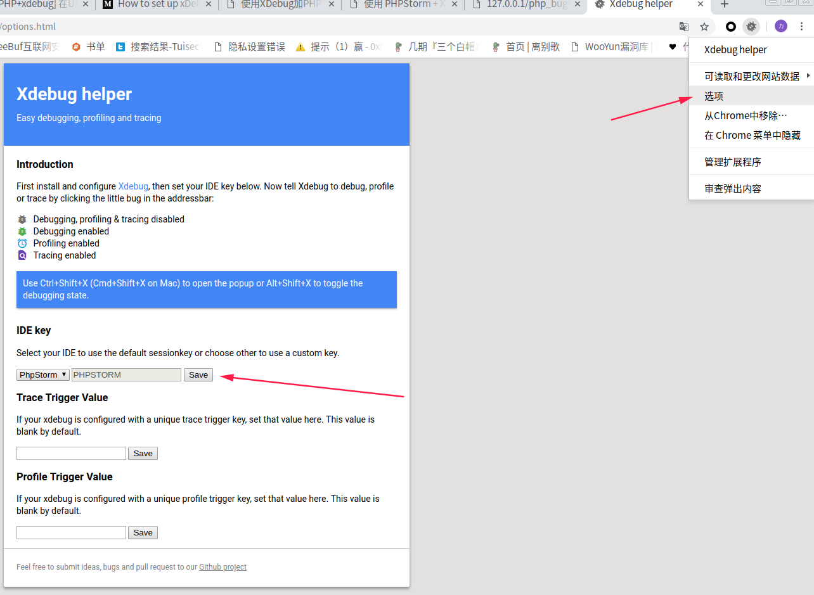
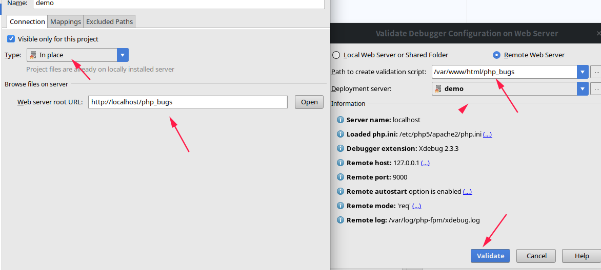
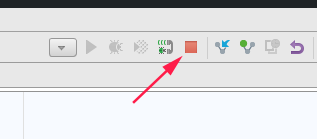
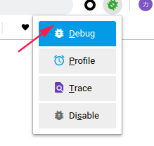
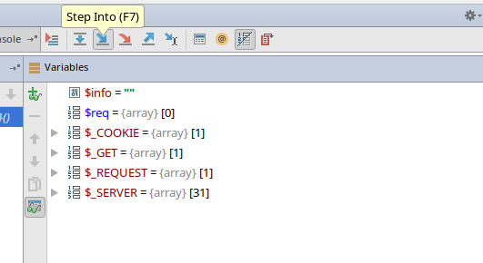

原理导图

配置xdebug
1. sudo apt-get install php5-xdebug //可以直接安装，安装之后会在phpinfo界面看到,选好php版本

2. 配置/etc/php5/mods-available/xdebug.ini 复制一下信息
1 | [XDebug] |
ps:zend_extension=xdebug.so 否则phpstorm在调试时会报错
- 重启apache2服务器
sudo service apache2 restart
配置phpstorm
- 配置php编译环境

- 配置debug端口与
xdebug.ini中设置的相同

- 配置文件访问本地apache2服务器所在端口和ip(默认填写是apache2默认端口和servername)
//可以在apache2.ini中查看默认都是http://127.0.0.1/test.php执行文件

- 在谷歌应用商店中下载Xdebug helper
配置选项设置IDE 为phpstorm

本地xdebug使用流程
- 导入需要调试本地服务项目
/var/www/html/php_bugs
- 设置本地服务器访问目录
在Run-web server debug validation
按如图所示设置//php_bugs是你项目为文件夹看看自己情况设置
点击validate验证是否成功没有报错即可

- 打开
phpstorm右上角的小耳朵

- 打开浏览器中的xdebug helper。并在该页访问你所导入项目的文件
http://127.0.0.1/php_bugs/2.php?numebr=%00191

- 在phpstorm中按f7逐步调试，其他按钮都可以试一试

参考链接
断点操作官方教程:https://www.jetbrains.com/help/phpstorm/debugging-code.html
配置过程：https://juejin.im/entry/59cba7066fb9a00a4d53f6d3参考连接